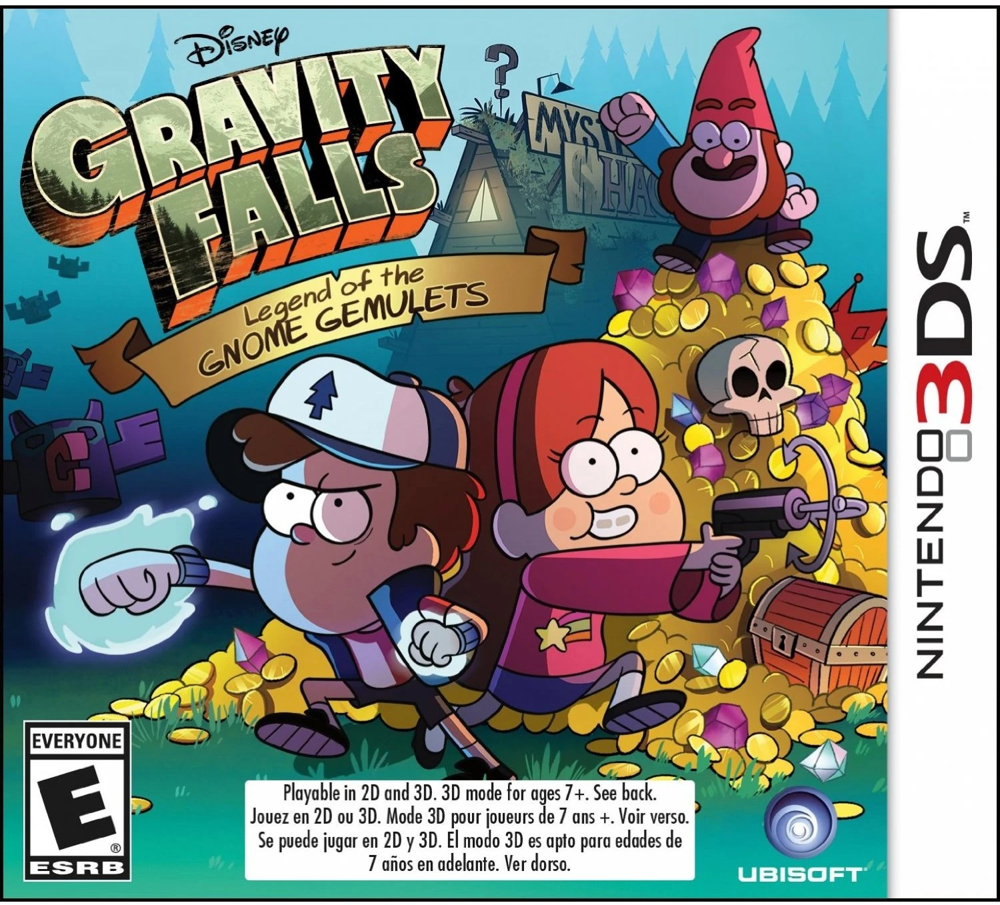

Videojuegos
Al igual que muchas franquicias exitosas, Gravity Falls cuenta con un numero limitado pero interesante de
videojuegos que no solo sirven para entretener a los jugadores, sino tambien para enriquecer el universo
de la serie. Los mas conocidos son:
- Gravity Falls: Legend of the Gnome Gemulets es un juego de plataformas y aventuras
para
Nintendo 3DS,
desarrollado por Ubisoft Osaka y Ubisoft San Francisco, con supervisión del creador de la serie,
Alex
Hirsch. La historia cuenta que Dipper y Mabel deben recuperar unos amuletos robados para salvar
a los gnomos del bosque. El juego posee una historia original que hace referencias a algunos
eventos de la serie, por lo que forma parte de la continuidad.

- Gravity Falls: Rumble’s Revenge es un juego en línea en el que Rumble
McSkirmish(del episodio "Fight
Fighters") busca vengarse de
Dipper y Mabel Pines atrapándolos en un videojuego. Los jugadores pueden elegir jugar como Dipper o
Mabel y deben completar varios niveles para escapar del mundo del videojuego y derrotar a Rumble
McSkirmish
- Gravity Falls: PinesQuest es un juego de aventuras en línea lanzado por Disney. Los
jugadores pueden
explorar Gravity Falls, resolver acertijos y enfrentarse a enemigos mientras siguen una historia
original. Toma lugar despues de los eventos de Rumble’s Revenge
- Gravity Falls Mystery Shack Attack es un juego para celulares, basado en defender
la
Cabaña del Misterio de
diversas criaturas y amenazas.
- Gravity Falls: Mystery Shack Mystery es un juego disponible en la pagina web de
Disney Channel,
estilo click & point. Los jugadores deben ayudar a Dipper y Mabel a resolver rompecabezas y
escapar de la Cabaña del Misterio.